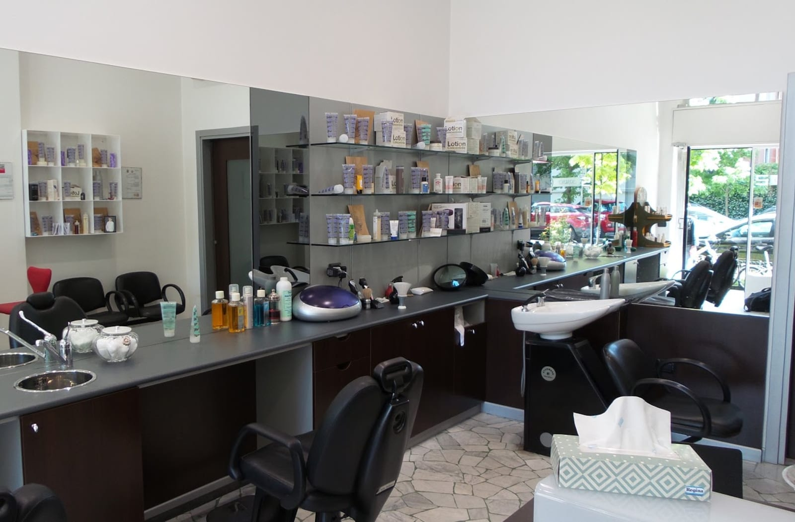
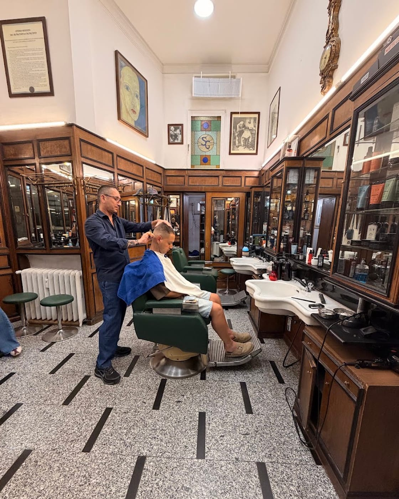
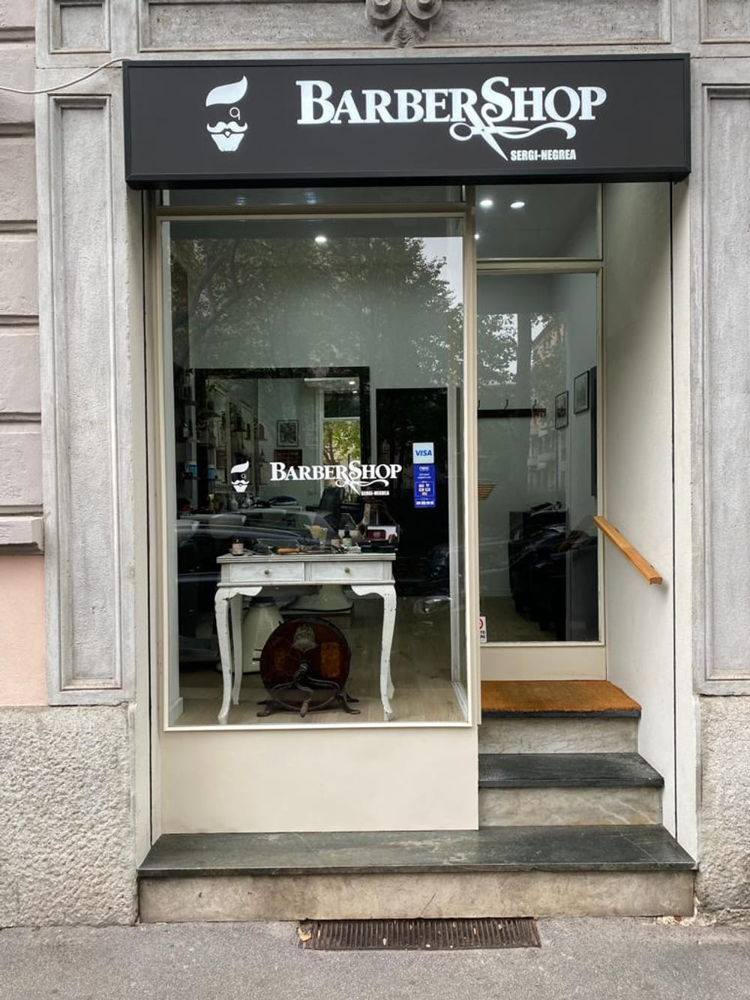
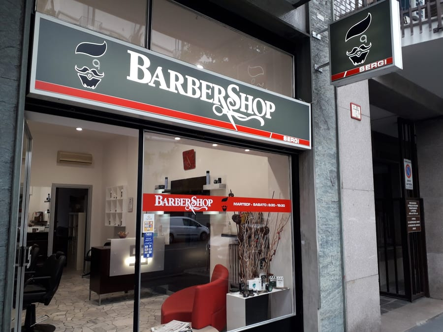
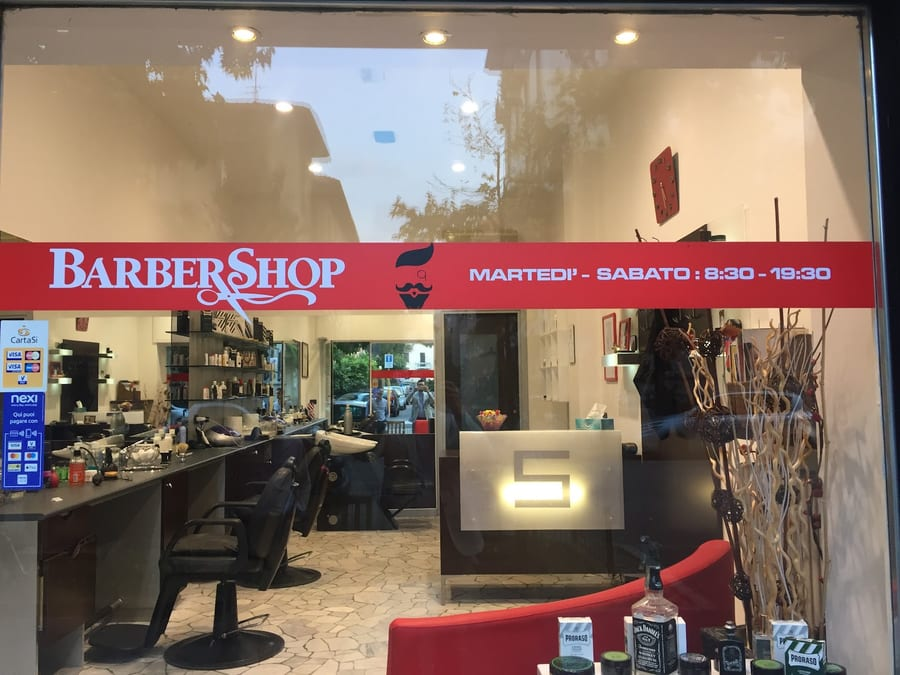
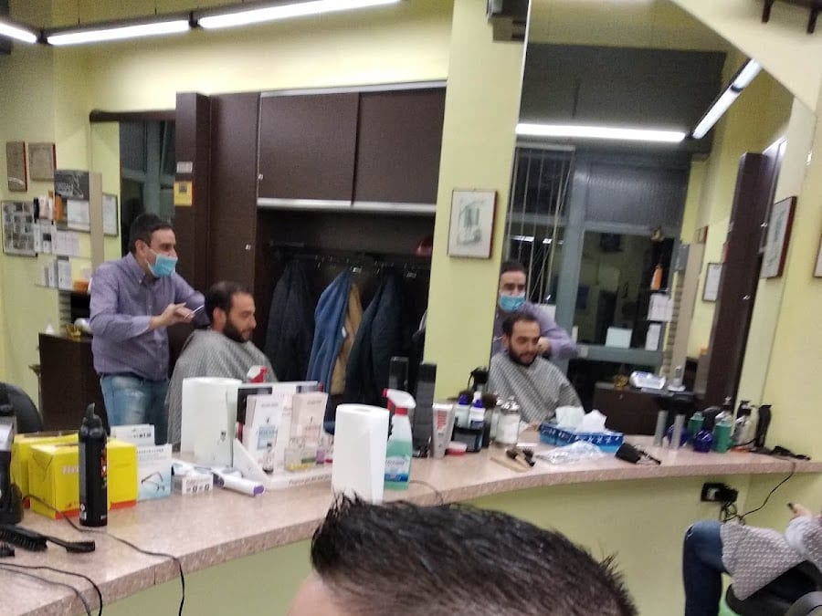

Il taglio
Classico o moderno, a forbice o a macchinetta. Su misura, senza fretta.

Barbieri in Corso Vercelli · dal 1929
La bottega storica di Sergi-Negrea: taglio, barba e il mestiere di una volta, nella sala Liberty del 1929.
4,4 · 61 recensioni · Google
La bottega
Si entra e si torna indietro nel tempo. La sala originale è ancora quella: la vetrata col monogramma SG, la boiserie in legno lucido, i lavabi in marmo, le poltrone d'epoca. Una bottega storica, viva dal 1929.
« Storia negozio dal 1929 » — la targa alla parete

Il mestiere
Il taglio curato — anche a forbice — la barba modellata con cura, il fade preciso. Il gesto di chi lo fa da una vita: «taglio uomo perfetto e ottima professionalità».
Classico o moderno, a forbice o a macchinetta. Su misura, senza fretta.
Modellata e rifinita col rasoio. «Finalmente una barba fatta a regola d'arte.»
La sfumatura pulita e precisa, per un taglio moderno che dura.

La storia
Quasi un secolo di forbici nella stessa sala. La bottega di Sergi apre nel 1929 e diventa un pezzo di storia del quartiere. Oggi il testimone è nelle mani di Vincenzo Negrea, che porta avanti lo stesso mestiere fatto con cura.
Un barbiere «gentile e professionale», che accoglie chiunque — e parla anche inglese: English spoken, per i clienti che arrivano da fuori.
dal 1929
La bottega



Cosa dicono
«Il signor Vincenzo è stato estremamente gentile, parlava un ottimo inglese e ha offerto un servizio davvero eccezionale. Consiglio vivamente questo posto e tornerò sicuramente.»
UkDong G. · Google
«Che dire… mi sono trovato bene, taglio uomo perfetto e ottima professionalità. Grazie Vincenzo.»
Giorgio S. · Local Guide
«Finalmente una barba fatta a regola d'arte.»
Cliente · Google
«Servizio veloce e preciso, lo consiglio.»
Cliente · Google
«Professional and stylish experience! Highly recommended. Got a great haircut.»
Reza D. · Google
Dove & orari
Via Correggio 69, 20149 Milano · a due passi da Piazza De Angeli e Corso Vercelli (M1 De Angeli).
—
| Lunedì | Chiuso |
|---|---|
| Martedì | 9:30 – 19:30 |
| Mercoledì | 9:30 – 19:30 |
| Giovedì | 9:30 – 19:30 |
| Venerdì | 9:30 – 19:30 |
| Sabato | 9:30 – 19:30 |
| Domenica | Chiuso |
Domande frequenti
Taglio uomo (classico o moderno, anche a forbice), barba fatta a regola d'arte e fade. Il mestiere di una volta, curato nei dettagli.
Si può prenotare online oppure chiamare lo 02 498 1435. Vincenzo e lo staff parlano anche inglese: English spoken.
Dal 1929. È una bottega storica: la sala Liberty originale — con la vetrata dal monogramma SG, la boiserie in legno e i lavabi in marmo — è ancora quella. Oggi la porta avanti Vincenzo Negrea.
Da martedì a sabato, dalle 9:30 alle 19:30. Chiuso domenica e lunedì.
In Via Correggio 69 a Milano, a due passi da Piazza De Angeli e Corso Vercelli. Telefono 02 498 1435.